Torna alla pagina di Economia ed Organizzazione Aziendale
:: Economia ed Organizzazione Aziendale ::
Lezione 28/04/2008
Operazioni di gestione con manifestazione numeraria anticipata
Operazioni:
- investimento
- disinvestimento
Le operazioni di gestione possono riguardare più esercizi e possono avere manifestazione monetaria anticipata(all'inizio dell'operazione).
La manifestazione monetaria misura i componenti economici(di reddito).
Se la manifestazione monetaria è anticipata il componente economico che la manifestazione monetaria misura entra TUTTO per intero in contabilità.
Poichè la manifestazione monetaria è anticipata e riguarda più esercizi, occorre individuare la quota del costo/ricavo di competenza di ciascuno degli esercizi a cui l'operazione di gestione si riferisce.
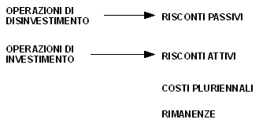
Quando si utilizzano queste 4 voci si sospende un costo/ricavo e lo si rimanda(come competenza economica) all'esercizio successivo.
Risconti Attivi
Sono quote di costo non ancora maturati, non di competenza dell'esercizio preso in esame, ma che hanno avuto manifestazione monetaria anticipata.
Esempio:
In data 1/3/2001 un impresa paga un premio di assicurazione anticipatamente per tutto l'anno di 6429.
1/3/2001
- pagamento del premio.
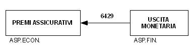
al 31/12/2001:
- nel calcolare il k-funzionamento si tiene conto della sospensione del costo → risconti attivi
- nel calcolare il reddito si determina la quota di costo di competenza del 2001
⇒ 10 mesi per 2001 e 2 mesi per 2002
6429 : 12 = x : 10
costo totale : anno del premio = quota di costo di competenza del 2001
x = (6429 * 10) / 12 = 5357,50 quota del costo di competenza 2001
quota NON di competenza: 6429 - 5357,50 = 1071,50
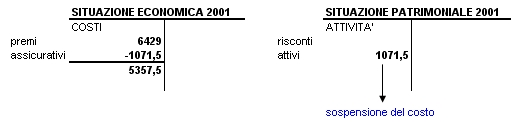
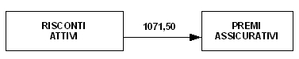
ANNO SUCCESSIVO (2002)
31/12
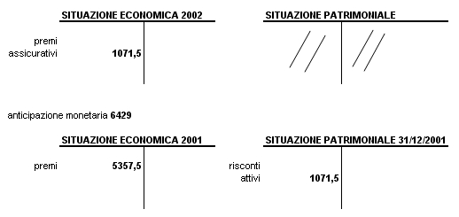
Risconti Passivi
Sono ricavi con manifestazione numeraria anticipata, e per una quota questi ricavi non sono di competenza dell'esercizio preso in esame.
Esempio:
In data 18/6/2000 un'azienda riceve da un cliente 67927,50 per fare una pubblicità della durata di 8 mesi.
RICHIESTA:
calcolare il ricavo di competenza dell'esercizio 2000.
SOLUZIONE:
18/6/2000
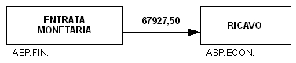
I ricavi di competenza del periodo: 18/6/2000 - 31/12/2000
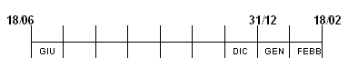
contiamo i giorni:
Giugno = 12+
1 Luglio - 31 Dicembre = 184+
1 Genn - 18 Febbr = 49
TOTALE GIORNI = 245 giorni
allora la quota del ricavo di competenza dell'es. 2000 è:
12 + 184 = 196 giorni
67927,50 : 245 = x : 196
x = (67927,50 * 196) / 245 = 54342 quota ricavi di competenza 2000
la quota NON di competenza la otteniamo per differenza:
ricavo totale = 67927,50
quota competenza 2000 = -54342
quota NON di competenza = 13585,50
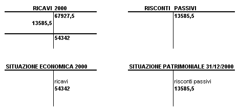
Costi e Ricavi relativi alle merci
- i COSTI di acquisto merci sono misurati da debiti v/fornitori e pagamenti dei debiti.
- i RICAVI che derivano dalla vendita della merce sono misurati da crediti v/clienti e incassi dei crediti.
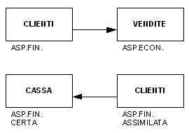
Se le merci acquistate sono interamente vendute nel corso dell'esercizio in esame, i costi e i ricavi sono interamente di competenza dell'esercizio(nella realtà è difficile che accada).
Esempio
Acquisto 100 tonnellate di merce. Nell'esercizio si vende merce per 80 tonnellate. Le 20 tonnellate non vendute rappresentano un costo NON di competenza dell'es., allora il costo deve essere sospeso (dobbiamo fare in modo che non sia tra i costi) e rappresenta le rimanenze finali.
Per calcolare il reddito d'es., se ci sono merci in rimanenza, devo togliere dai costi il valore delle rimanenze finali e si inseriscono nella sit.patr.(k-funzionamento).
Esempio
Un'impresa nel 1°anno di attività acquista merci per 437500 e vende merci ottenendo un ricavo di 632500, alla fine dell'es. risulta venduto l'80% degli acquisti.
IP: le rimanenze vengono valutate a costo.
Valore rimanenze finali:
ACQUISTI 437500 * 80%(quota venduta) = 350000 valore dei beni acquistati e venduti
ACQUISTI 437500 - BENI VENDUTI 350000 = Valore a costo delle R.F. = 87500
31/12
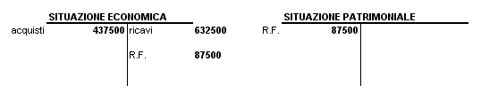
Esercizio
Un'impresa commerciale al 1/1/2000 ha esistenze iniziali di merci in magazzino per 87500. Nel corso del 2000 acquista merce per 599000 e vende merce per 905000.
A fine anno le R.F. sono valutate 100000.
RICHIESTA:
presentare le situazioni contabili.
SOLUZIONE:
Ci sono 3 diversi modi per costruire le situazioni contabili.
1°Metodo:
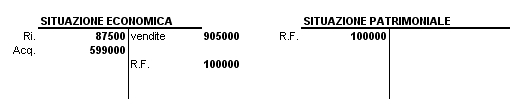
2°Metodo:
seconda modalità di iscrizione delle rimanenze nella situazione economica.
Costo delle merci vendute:
- esistenze iniziali 87500
- + acquisti + 599000
- - rimanenze finali - 100000
TOT = 586500
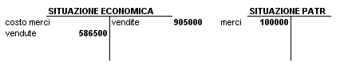
3°Metodo:
Calcolare la differenza tra le rimanenze finali e le esistenze iniziali e nell'inserire nella situazione economica distintamente gli acquisti e le vendite.
se R.F. > R.I. ⇒ la variazione delle rimanenze nella situazione economica si iscrive nei ricavi.
se R.F. < R.I. ⇒ la variazione delle rimanenze si iscrive nei costi.
R.I. = 87500
R.F. = 100000
⇒ variazione delle rimanenze R.F. > R.I. 100000 - 87500 = 12500 nei ricavi
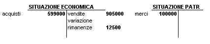
Torna alla pagina di Economia ed Organizzazione Aziendale